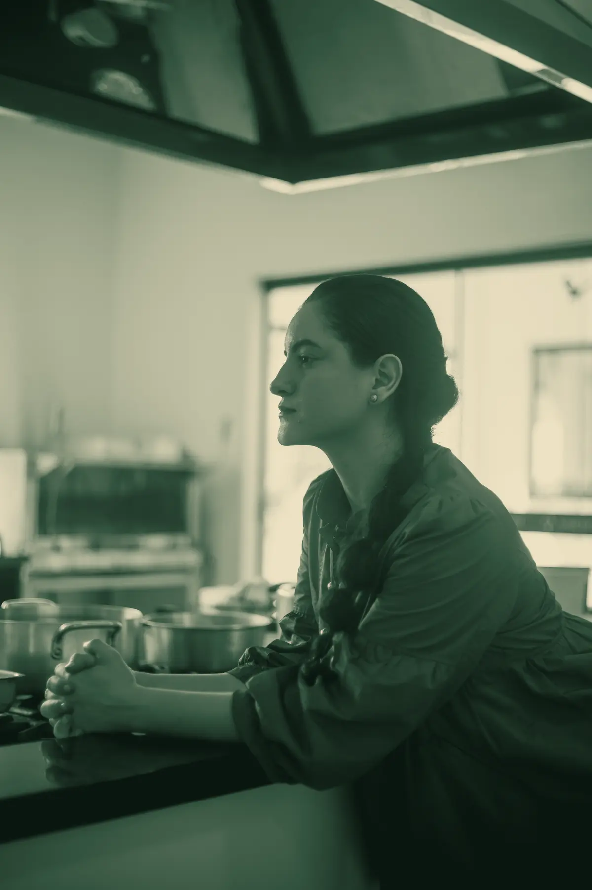
Personal chef · Brusque e região
Comer bem,na sua cozinha.
Aline Fonseca cozinha na sua casa para quem tem restrição alimentar, segue um plano de nutricionista ou precisa de uma alimentação diferente. Poucas casas por vez.
Tem gente que nunca se sentou à mesa com tranquilidade. Por causa de uma alergia, de um plano alimentar, de uma fase da vida. Eu cozinho para essas pessoas, sem fazer disso um peso e sem tirar o prazer de comer.
Aline Fonseca
Para quem
Para quem a cozinha comum não atende
A Aline cozinha para quem precisa de mais cuidado com o que come.
Prescrever dieta é atividade privativa do nutricionista (Lei Federal nº 8.234/1991, art. 3º, VIII). A Aline cozinha o que o seu plano pede e não prescreve nem altera dietas.
- 01
Restrições alimentares
Alergias, intolerâncias, doença celíaca. Cada caso é avaliado antes, e a comida é pensada com o cuidado que a restrição exige.
- 02
Plano do nutricionista
Você traz o plano e a Aline cozinha o que ele pede, com as quantidades e os cuidados combinados.
- 03
Idosos
Comida macia, saborosa e adaptada ao que a pessoa consegue e gosta de comer. Comida de verdade, com a cara da casa.
- 04
Pós-parto
Refeições que acolhem uma fase em que cozinhar é a última coisa possível, e comer bem é o que mais importa.
- 05
Esportistas e vida fit
Rotina de treino pede regularidade. Refeições organizadas para a semana, dentro do padrão que você já segue.
- 06
Quem quer comer diferente
Sem diagnóstico e sem plano. Só a vontade de comer melhor, com ingredientes e preparo de qualidade.
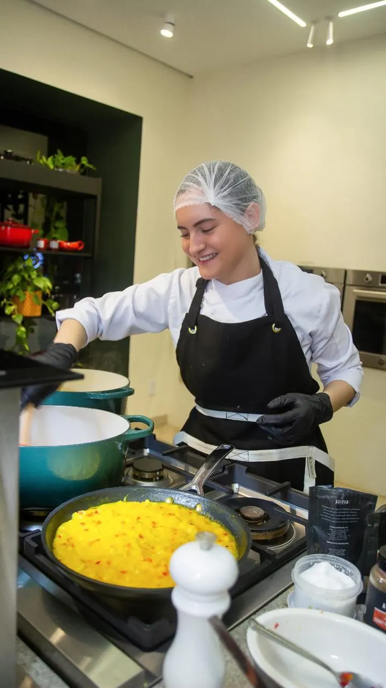
A chef
Aline Fonseca
Nasci em Vilhena, no interior de Rondônia, numa casa de cultura sulista. Cresci entre cuca doce, polenta e churrasco, e esses sabores nunca saíram de mim. Em Brusque, eles fazem parte da mesa de todo mundo.
Estudei Gastronomia em Porto Velho e passei anos cozinhando para eventos. Tive buffet próprio e servi até quinhentas pessoas de uma vez. Hoje escolhi o contrário: me dedico a levar qualidade alimentar direto para a casa de cada cliente, conhecendo quem vai comer e cozinhando do jeito que essa pessoa precisa.
- 01 Técnica em Gastronomia, FIMCA, Porto Velho
- 02 Curso de Cozinheiro, SENAC
- 03 Anos à frente de buffet próprio e eventos de até 500 pessoas
- 04 Chef em campanha da Le Creuset
- 05 Já cozinhou para um presidente da República
O que sai da cozinha dela
Arraste a rolagem →
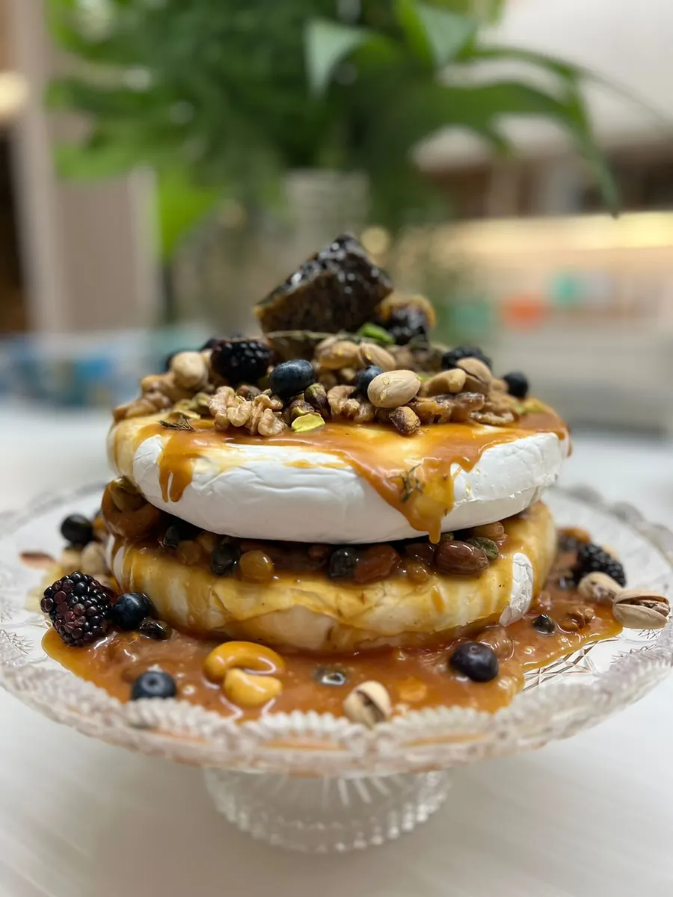
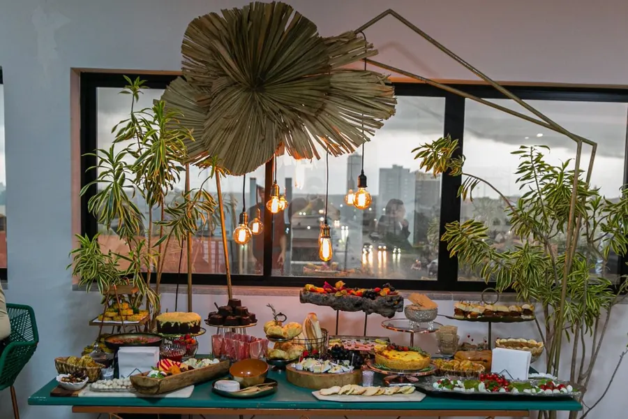
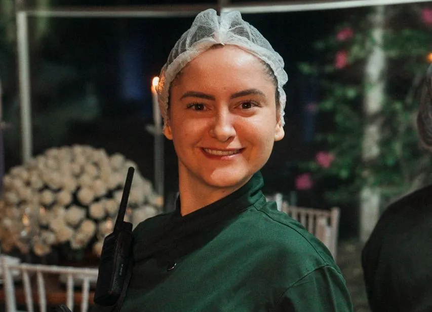
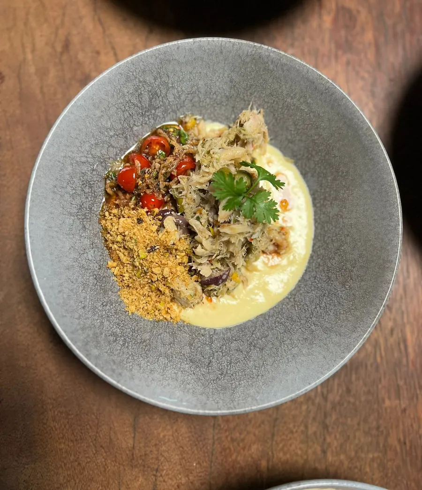
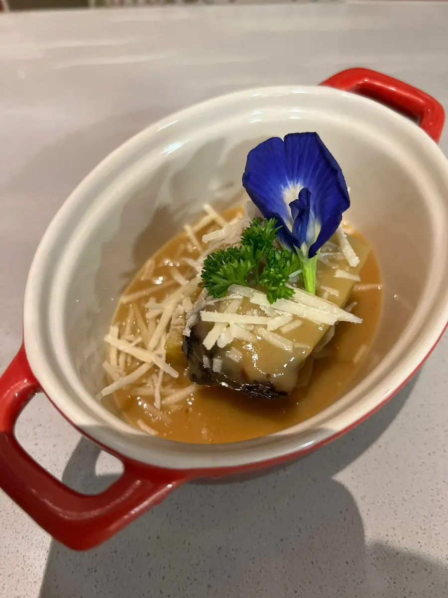
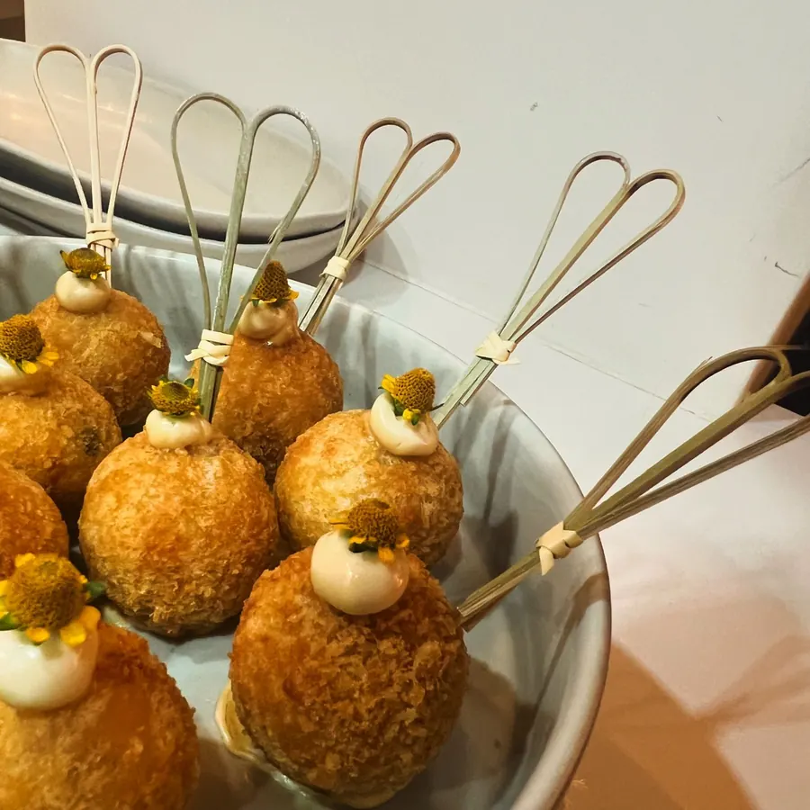
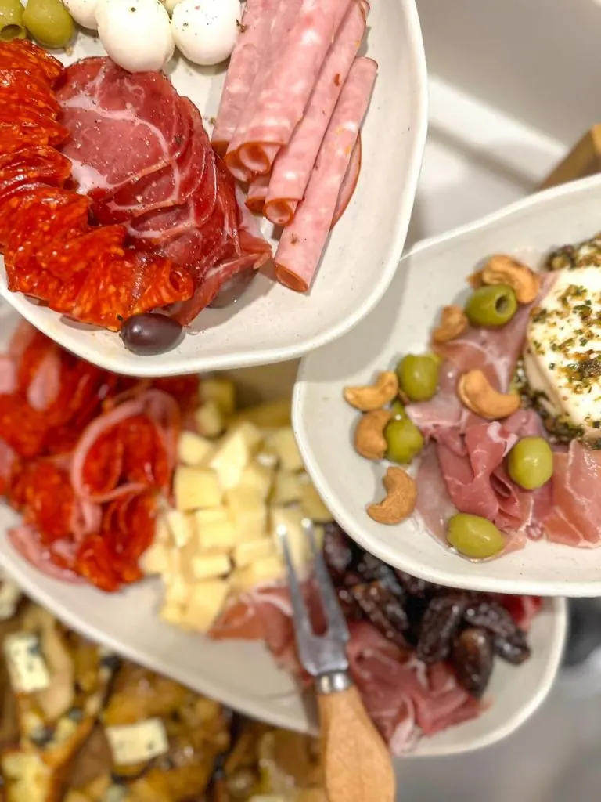
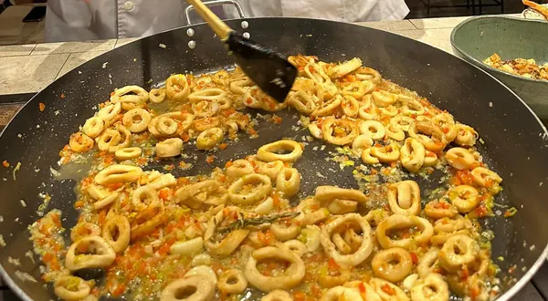
Cada casa recebe o que combina com ela.
Como funciona
Do primeiro contato ao jantar
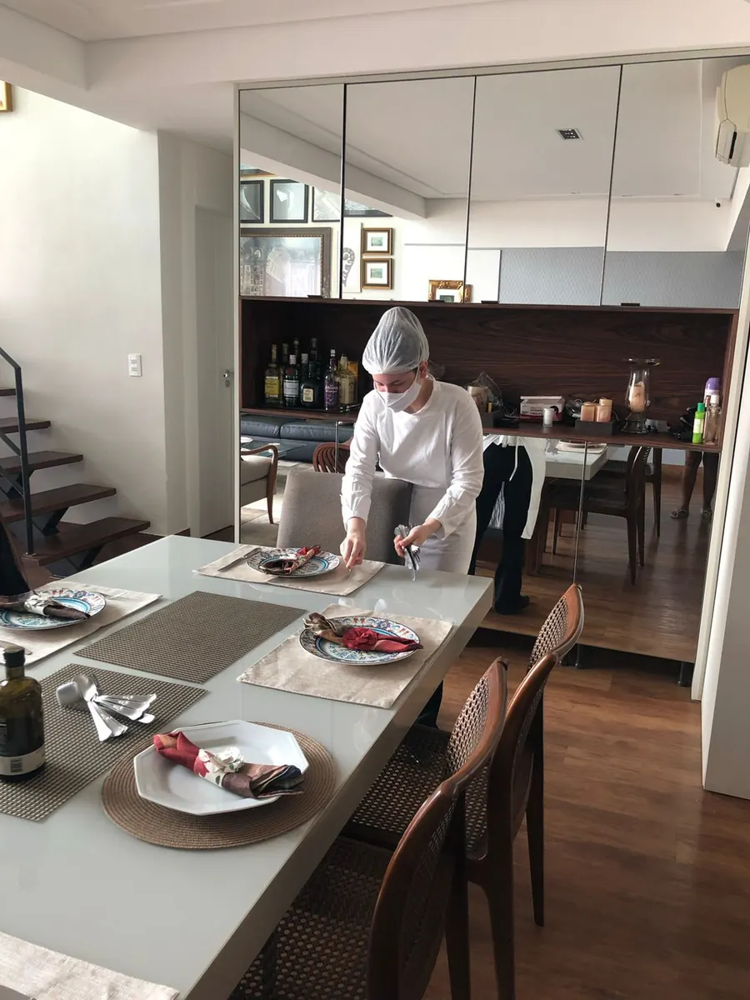
Você conta o que precisa
Responde a um roteiro curto sobre restrições, plano alimentar, gostos e rotina. Leva uns três minutos.
A Aline avalia
Ela lê tudo, diz se consegue atender com segurança e continua a conversa pelo WhatsApp.
Alinham os detalhes
Se você tem plano de nutricionista, ela recebe o plano. Combinam frequência, ingredientes e logística antes de começar.
Ela cozinha na sua casa
A Aline vai até você, cozinha na sua cozinha e organiza as refeições conforme o combinado.
Pedir um lugar na agenda
Conte o que você precisa e o que gosta
Marque o que combina com você. A Aline lê antes de responder e já sabe por onde começar. Tudo que você contar é tratado com respeito.
Perguntas
O que costumam perguntar
A Aline cozinha na minha casa?
Sim. Ela leva a técnica e o jeito dela para a sua cozinha e cozinha ali, com o que combinarem.
A Aline monta dietas?
Não. Prescrever dieta é atividade privativa do nutricionista, conforme a Lei nº 8.234/1991. A Aline cozinha o que o seu plano pede, com as quantidades e os cuidados combinados, e conversa com o seu nutricionista se você quiser.
Preciso ter restrição ou plano?
Não. Quem só quer comer melhor, sem precisar pensar em tudo, também é bem-vindo. O mesmo vale para idosos, mulheres no pós-parto e quem treina e quer regularidade.
E se eu tiver alergia ou intolerância?
Conte na hora de pedir o seu lugar. Cada caso é avaliado antes de qualquer combinação. Em casa, utensílios e superfícies precisam de atenção, e nem toda alergia grave dá para atender com segurança. Se não der, ela diz com clareza.
Quem compra os ingredientes?
Isso é combinado antes. Pode ser você, ou a própria Aline, com prestação de contas e taxa de serviço informada previamente.
Quanto custa?
Depende do número de pessoas, da frequência e do que for combinado. Por isso o valor é definido na conversa, com clareza antes de começar.
Com que frequência ela vai?
Toda semana, a cada quinze dias ou como combinarem. A agenda é pequena de propósito, para que cada casa tenha atenção de verdade.
Quais cidades vocês atendem?
Brusque e região. Mora em outra cidade? Escreva, que ela avalia.
Poucas casas por vez
Quer um lugar na agenda?
Conte o que você procura. A Aline responde pessoalmente e diz se há espaço.
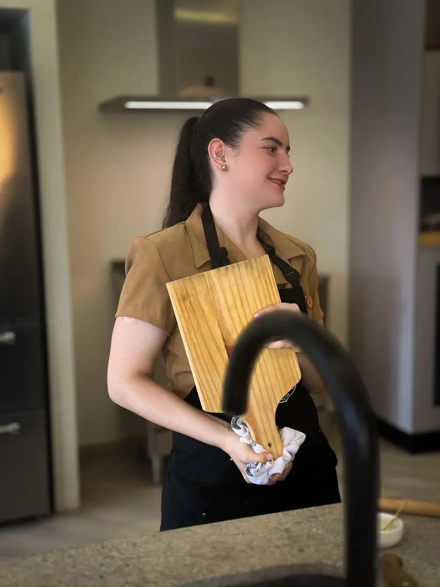